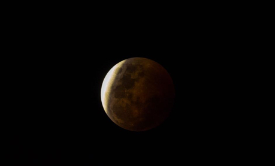
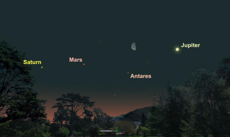
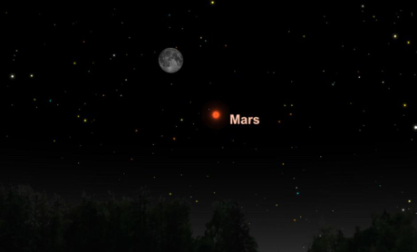
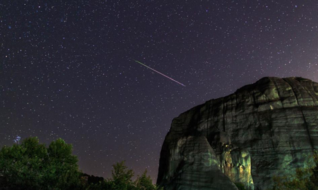

Constellations are groups of stars that form the shape of an object or animal. Click the Summer Sky and Winter Sky buttons above to learn about the major constellations in the night sky. Click the menu button above or scroll down to find out more about stars and the special events that are happening in the sky this year.
| Date | Event | Picture |
|---|---|---|
| January 31 | Super, Blue Moon, Eclipse Watch as the Earth’s dark shadow slowly creeps over the bright moon as the planet moves between the sun and moon in this total lunar eclipse. The full moon this night will also be a supermoon, appearing bigger than usual as the moon will be relatively close to the Earth, and since this will be the second full moon of the month, it will also be a blue moon. |
 |
| March 7-8 | Planet Parade Three planets (Saturn, Mars and Jupiter) will form a cosmic conga line with the moon in early March. This planetary alignment will dominate the southeastern sky at dawn. Starting March 7, the wanning moon will appear to pay visits to each planet in the lineup. On March 8, the moon will tuck itself between Mars and Jupiter. |
 |
| July 27 | Mars at its Best On this night, Mars will be at its biggest and brightest since 2003. At this time, Mars will look like a super-bright orange star in the southern sky. Mars does not have a perfectly circular orbit around the sun, so the red planet gets nearer and farther from Earth over time. On this night, Mars will be at its closest to the Earth and won’t get this close again until 2035. If you can, use a backyard telescope to view surface features of Mars like white polar caps and dark volcanic plains. |
 |
| August 12-13 | Perseid Meteor Shower One of the most intense meteor showers, the Pereids regularly produce up to 60 shooting stars an hour at their peak. This year promises to be spectacular as the peak happens on a dark, moonless sky on the night of August 12 and into the dawn of August 13. |
 |